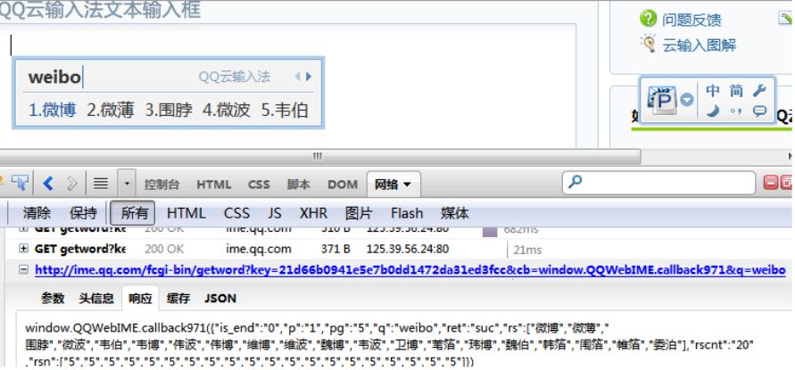

对象是命名的的值的集合(键-值对)，它和数组很相似，唯一的不同之处在于你可以为每个数据值指定名字。
1 2 3 4 5 6 7 8 | <html> <head> <title>Sample Page</title> </head> <body> <p>hello world!</p> </body> </html> |
1 2 3 4 5 6 7 | <div id="idName" node-type="hello"> <ul id="ul"> <li>i am 1</li> <li>i am 2</li> <li>i am 3</li> </ul> </div> |
创建：createElement/createTextNode
1 2 3 4 5 6 7 8 9 | //创建元素节点 var $span = document.createElement('span'); //创建文本节点 var $text = document.createTextNode('world!'); $span.style.color = 'red';//给点color see see $span.appendChild($text); //获取插入父节点 var node = document.getElementById('cNode'); node.appendChild($span); |
删除：.removeChild
1 2 3 | var node = document.getElementById('cNode');//获取p node = node.getElementsByTagName('span')[0];//获取span列表，取第一个 node.parentNode.removeChild(node);//删除 |
应用 云输入法
